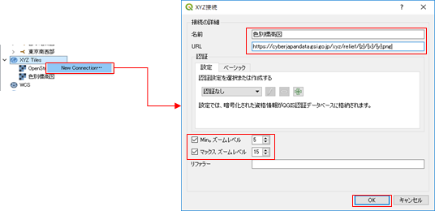
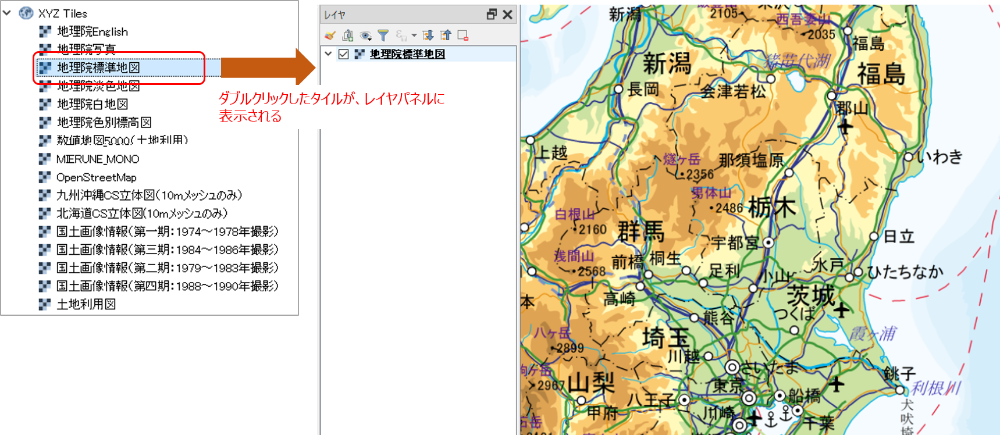

演習 索引
【実習】 QGISの基本的な使い方を理解する
インストールしたQGISを起動して、自分のいる場所の国土地理院地図を表示させてみましょう。
【解説】
QGISのレイヤで地理院タイルを表示するには、以下の手順で行う。
タイルを表示するには、インターネットに接続した環境でなければなりませんので注意すること。
まず、以下の手順で地理院タイルをQGISでいつでも呼び出せるように定義する。
１． 「ブラウザ」パネルで [XYZ Tiles] を右クリックして [New Connection] をクリックする。
２．「XYZ接続」ダイアログで地図タイルのサイトURLを設定して [OK] をクリックする（ 下図参照：名称は自由に設定できる）。

ここで設定する「URL」は、地理院タイルの場合は、
https://maps.gsi.go.jp/development/ichiran.html に載っているので、目的の地図のURLを指定して使用すること。
次に、上記で定義した地理院タイルをマップキャンバスに表示する。
1.「ブラウザ」パネルで、上記で追加した地理タイルをダブルクリックする。
2．「レイヤ」パネルに地理院タイルが追加され、マップキャンバスに地図が表示されていることを確認する。

- 地図が表示されたら、マップキャンバスの拡大・終章や移動を行って、自分のいる場所を地図上で探してみる。